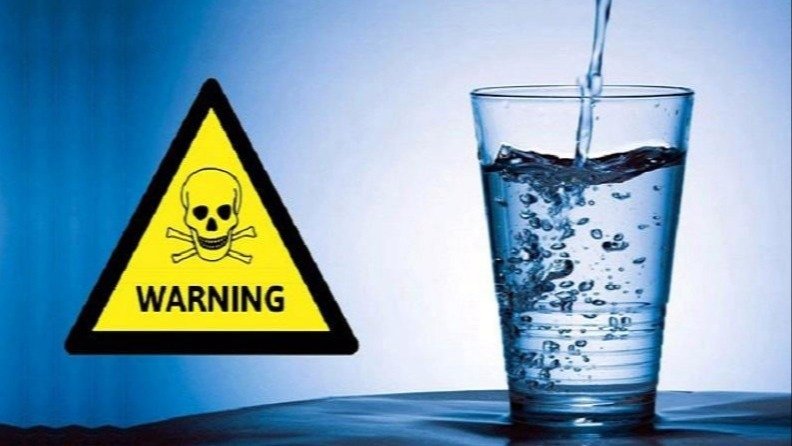

Problemet
Årtiers forurening fra industri og landbrug har ødelagt vores drikkevand. Drikkevandsboringer i Danmark lukkes igen og igen, og vandværkerne blander forurenet vand op med renere vand for at holde sig under grænseværdierne og stadig dække behovet. Stofferne fjernes ikke – de fortyndes.
Danske vandværker er forpligtet til at kontrollere grænseværdien for 73 stoffer. Vi kender dog mere end 4.700 PFAS-stoffer og 590 pesticider brugt i Danmark.
Mindst 56,8 % af de danske boringer indeholder pesticidrester, og mindst 18 % indeholder PFAS. Der testes kun for en brøkdel af de stoffer, der reelt findes – testes der for blot ti pesticider mere, stiger tallet markant, samt de overskridelser af grænseværdierne stiger til mere end en fjerdel, hvilket indikerer et kæmpe skyggetal. Vi finder kun det, vi leder efter – ikke det, vi ikke leder efter.
Stofferne forbindes bl.a. med kræft, infertilitet og organskader. WHO peger på forurenet drikkevand generelt som en af de største globale sundhedsrisici, og globalt mangler mindst 2,2 milliarder mennesker adgang til sikkert drikkevand.
Danmark bliver nødt til at begynde at skelne mellem brugsvand og drikkevand, som stort set resten af verden. Indtil da er det kroppen, der agerer filter.